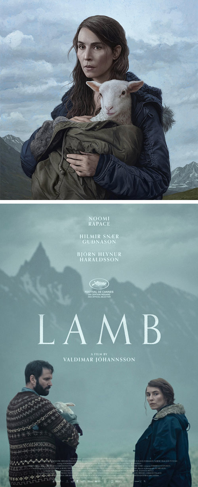
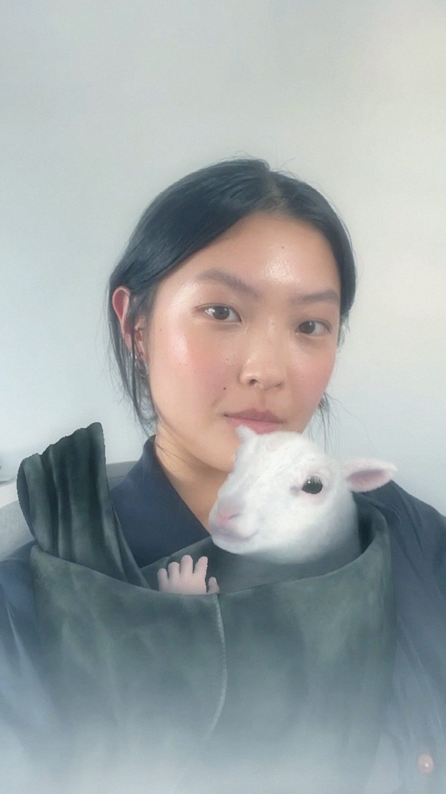

A24 / LAMB
AR. Film (2021)
The A24 horror release, Lamb, directed by Valdimar Jóhannsson, starring Noomie Rapace, tells the disturbing tale about a childless couple raising a lamb-human hybrid as their own. They name her Ada.
An Instagram AR experience was created for this release, combining face-tracking and uncanny realism with a hint of cuteness to transform users into Ada’s adoptive parent.
In order for this moment to capture the story’s intriguing ambience while maintaining shareability across social media, the creepiness of the human hand is balanced by a more adorable version of Ada in comparison to the film, whose bleats and blinks are always in sync with the user’s actions.
Creative Direction, Production & Sound Design / Watson Design Group
Design, 3D, and AR Development / Helena Dong
AR. Film (2021)
The A24 horror release, Lamb, directed by Valdimar Jóhannsson, starring Noomie Rapace, tells the disturbing tale about a childless couple raising a lamb-human hybrid as their own. They name her Ada.
An Instagram AR experience was created for this release, combining face-tracking and uncanny realism with a hint of cuteness to transform users into Ada’s adoptive parent.
In order for this moment to capture the story’s intriguing ambience while maintaining shareability across social media, the creepiness of the human hand is balanced by a more adorable version of Ada in comparison to the film, whose bleats and blinks are always in sync with the user’s actions.
Creative Direction, Production & Sound Design / Watson Design Group
Design, 3D, and AR Development / Helena Dong

Thumbnail / Lamb film poster